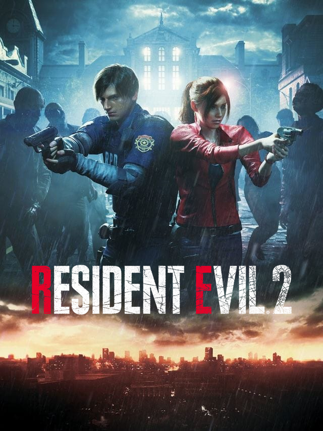

Resident Evil 2
Detalhes
|  | |
| Tempo de jogo | 2m 6s |
| Última Atividade | 16/03/2025 0:21:32 |
| Adicionado | 16/03/2025 0:21:09 |
| Modificado | 16/03/2025 0:21:16 |
| Status de Conclusão | Jogado |
| Biblioteca | Gog |
| Fonte | GOG |
| Plataforma | PC (Windows) |
| Data de Lançamento | 25/01/2019 |
| Pontuação da Comunidade | 88 |
| Avaliação da crítica | 93 |
| Pontuação do Usuário | |
| Gênero | Adventure Shooter |
| Desenvolvedor | Capcom Development Division 1 |
| Editor | Capcom |
| Funções | Single Player |
| Links | Twitter YouTube Official Wikia Steam Wikipedia Twitch iPhone iPad |
| Tag | |
Descrição

そこを歩く、という恐怖。
Immerse yourself in the ultimate test of survival. Face your fears in this terror-filled classic edition of Resident Evil™ 2 for PC containing more horror, more mutant creatures and more evil than before.
生き残りをかけた究極の体験に没入せよ。前作を越える邪悪な怪物や恐怖を引っ提げて、PC向け『バイオハザード 2』クラシック版が登場。
Just like with Resident Evil™, we made sure GOG's version of the second entry in the series is the best it can be. Here's what we did to make this masterpiece last forever:
- Full compatibility with Windows 10 and Windows 11.
- 6 localizations of the game included (English, German, French, Italian, Spanish, Japanese).
- Improved DirectX game renderer.
- New rendering options (Windowed Mode, Vertical Synchronization Control, Gamma Correction, Integer Scaling and more).
- Improved audio volume and panning.
- Improved cutscenes and subtitles.
- Improved savegame manager.
- Improved game video player.
- Issue-less game exit.
- Improved game registry settings.
- Improved key-binding settings and audio settings screens.
- Improved end credits in the German version.
- Fixed issues with Rooms 114 and 115 (missing text), Room 210 (invisible diary), and Room 409 (looping sound).
- Full support for modern controllers (Sony DualSense, Sony DualShock4, Microsoft Xbox Series, Microsoft Xbox One, Microsoft Xbox 360, Nintendo Switch, Logitech F series and many more) with optimal button binding regardless of the hardware, hotplugging and wireless mode.
- 4th Survivor and Tofu modes enabled from the very beginning.

Our version of the game keeps all the original content intact – 1998's description is no exception. Take a trip down memory lane and see how Resident Evil™ 2 was described to gamers when it launched all those years ago:
FEATURES:
- 2 Separate Adventures! Command Leon Kennedy, a rookie cop who stumbles onto the carnage reporting for his first duty, or play as Claire Redfield, desperately searching for her missing brother.
- Cutting edge 3-D accelerated graphics that create a terrifying, photo-realistic experience.
- 3-D accelerated and non 3-D accelerated settings to maximize performance whatever your setup.
- Features complete versions of both original U.S. and the original Japanese versions of Resident Evil™ 2.
- New Extreme Battle Mode: Battle your way through hordes of zombies as you play the hyper-intensive challenge that changes every time you play.
- All new Resident Evil™ 2 picture gallery.
- The game's secret scenario available from the very beginning (no need to finish it under certain conditions first).
前作『バイオハザード』と同様に、本作においてもGOG版ではさまざまな最適化を実施。永久に手元に残せる決定版として施した改善は次のとおり：
- Windows 10とWindows 11との完全な互換性の実現/li>
- 6言語版への対応（英語、ドイツ語、フランス語、イタリア語、スペイン語、日本語）
- DirectXゲームレンダラーの調整
- 新しい画面描画オプションの追加（ウィンドウモード、垂直同期コントロール、ガンマ補正、整数スケーリングほか）
- オーディオの音量と音像定位の改善
- カットシーンと字幕の改善
- セーブデータ管理機能の改善
- ゲーム内のビデオ再生機能の調整
- ゲーム終了時の処理の改善
- ゲームのレジストリ設定の調整
- キーバインド設定とオーディオ設定画面の改善
- ドイツ語版のスタッフクレジットの改善
- 114号室と115号室のテキスト表示に関する問題の修正、210号室の日記が見えない問題の修正、409号室のサウンドループ問題の修正
- メジャーなコントローラー（Sony DualSense、Sony DualShock4、Microsoft Xbox Series、Microsoft Xbox One、Microsoft Xbox 360、Nintendo Switch、Logitech Fシリーズほか多数）にホットプラグ機能やワイヤレスモードも含めて完全対応し、コントローラーごとに最適なボタン配置を提供
- 「4th Survivor」と「豆腐」モードをゲーム開始直後から選択可能に変更
GOG版では、1998年に発売された本作オリジナルの要素を完全再現。『バイオハザード 2』が当時どのようにゲーマーに紹介されていたか、そのテキストを掲載（注：当時の英語版準拠のテキストとなります）：
特徴：
- はじめての任務に向かう途中で大事件に巻き込まれた新人警官の「レオン・ケネディ」と、音信不通となった兄を捜す「クレア・レッドフィールド」の物語が個別に展開
- 最新の3Dアクセラレーテッドグラフィックスが、リアルな恐怖体験を呼び起こす
- 3Dアクセラレーターの設定を切り替えることで、プレイ環境に応じてパフォーマンスを最大化
- オリジナルの米国版『Resident Evil 2』と日本版『バイオハザード 2』の両方を実装した完全版 日本語版、米国版がそれぞれORIGINAL、ARRANGEとしてモード選択可能に！
- エクストリームバトルモード：迫りくる大量のゾンビを相手に、熾烈なチャレンジをクリアせよ。アイテムや敵の配置は毎回ランダムに変化
- 『バイオハザード 2』のギャラリーモードを搭載
- ゲーム開始直後から隠しシナリオをプレイ可能（先に一定の条件を満たしてゲームをクリアする必要なし）